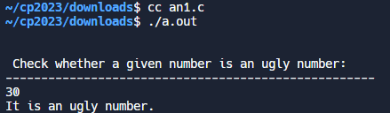
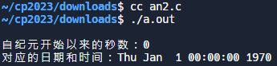
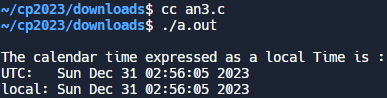
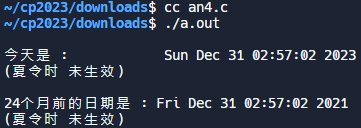
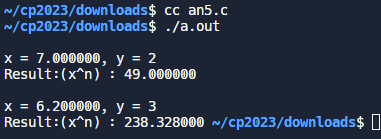
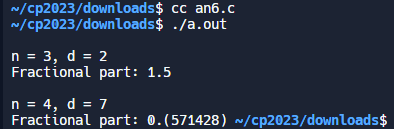
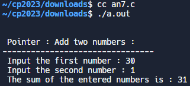
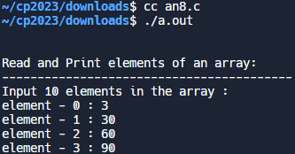
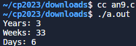
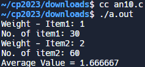

CEX_T <<
Previous Next >> ANSIC_T
ANSIC
1
#include <stdio.h>
#include <string.h>
int main() {
int n, x = 0;
printf("\n\n Check whether a given number is an ugly number:\n");
printf("----------------------------------------------------\n");
// 检查 scanf 的返回值
if (scanf("%d", &n) != 1) {
printf("Input is not a valid integer.\n");
return 1; // 退出程序，表示出现错误
}
if (n <= 0) {
printf("Input a correct number.\n");
} else {
while (n != 1) {
if (n % 5 == 0) {
n /= 5;
} else if (n % 3 == 0) {
n /= 3;
} else if (n % 2 == 0) {
n /= 2;
} else {
printf("It is not an ugly number.\n");
x = 1;
break;
}
}
if (x == 0) {
printf("It is an ugly number.\n");
}
}
return 0;
}
解釋：
1. `#include <stdio.h>`：包含標準輸入/輸出庫的指令，以便使用 `printf` 和 `scanf` 函式。
2. `#include <string.h>`：包含字串操作相關的庫，雖然在目前的程式碼中未使用。
3. `int main()`：定義主函式。
4. `int n, x = 0;`：宣告兩個整數變數 `n` 和 `x`，其中 `x` 被初始化為0。
5. `printf("\n\n Check whether a given number is an ugly number:\n");`：輸出提示消息，要求用戶輸入一個數字以檢查是否為"ugly number"。
6. `printf("----------------------------------------------------\n");`：輸出分隔線。
7. `if (scanf("%d", &n) != 1)`：使用 `scanf` 函式讀取用戶輸入的數字。檢查 `scanf` 的返回值，確保成功讀取一個整數。
8. `{`：`if` 條件語句的開始。
9. `printf("Input is not a valid integer.\n");`：如果讀取失敗，輸出錯誤消息。
10. `return 1;`：返回1，表示程式發生錯誤。
11. `}`：`if` 條件語句的結尾。
12. `if (n <= 0)`：檢查用戶輸入的數字是否小於或等於0。
13. `{`：`if` 條件語句的開始。
14. `printf("Input a correct number.\n");`：如果是，輸出消息表示輸入的數字不正確。
15. `}`：`if` 條件語句的結尾。
16. `else`：如果 `n` 大於0，執行以下語句。
17. `{`：`else` 語句的開始。
18. `while (n != 1)`：當 `n` 不等於1時，執行以下循環。
19. `{`：`while` 循環的開始。
20. `if (n % 5 == 0)`：如果 `n` 可以被5整除。
21. `{`：`if` 條件語句的開始。
22. `n /= 5;`：將 `n` 除以5。
23. `}`：`if` 條件語句的結尾。
24. `else if (n % 3 == 0)`：如果 `n` 不可被5整除，並且可以被3整除。
25. `{`：`else if` 條件語句的開始。
26. `n /= 3;`：將 `n` 除以3。
27. `}`：`else if` 條件語句的結尾。
28. `else if (n % 2 == 0)`：如果 `n` 不可被5和3整除，並且可以被2整除。
29. `{`：`else if` 條件語句的開始。
30. `n /= 2;`：將 `n` 除以2。
31. `}`：`else if` 條件語句的結尾。
32. `else`：如果 `n` 不能被5、3和2整除。
33. `{`：`else` 語句的開始。
34. `printf("It is not an ugly number.\n");`：輸出消息表示輸入的數字不是"ugly number"。
35. `x = 1;`：設置 `x` 為1，表示已經找到了結果。
36. `break;`：跳出 `while` 循環。
37. `}`：`else` 語句的結尾。
38. `if (x == 0)`：檢查 `x` 的值是否仍然為0。
39. `{`：`if` 條件語句的開始。
40. `printf("It is an ugly number.\n");`：如果是，輸出消息表示輸入的數字是"ugly number"。
41. `}`：`if` 條件語句的結尾。
42. `return 0;`：主函式正常結束，返回值為0。

2
#include <stdio.h>
#include <time.h>
int main(void)
{
time_t epoch = 0;
printf("\n自纪元开始以来的秒数：%ld\n", (long)epoch);
printf("对应的日期和时间：%s\n", asctime(gmtime(&epoch)));
return 0;
}
解釋：
1. `#include <stdio.h>`：包含標準輸入/輸出庫的指令，以便使用 `printf` 函式。
2. `#include <time.h>`：包含時間相關的庫，以便使用 `time` 函式和其他時間相關的功能。
3. `int main(void)`：定義主函式，返回一個整數。
4. `time_t epoch = 0;`：宣告一個 `time_t` 型別的變數 `epoch` 並將其初始化為0。`time_t` 是一種用於表示時間的數據類型，通常是從UNIX紀元（1970年1月1日）開始的秒數。
5. `printf("\n自纪元开始以来的秒数：%ld\n", (long)epoch);`：輸出一條消息，顯示從UNIX紀元開始到目前經過的秒數。使用 `%ld` 格式化輸出長整數，`(long)epoch` 將 `epoch` 轉換為長整數。
6. `printf("对应的日期和时间：%s\n", asctime(gmtime(&epoch)));`：輸出一條消息，顯示將 `epoch` 轉換為日期和時間的結果。`gmtime(&epoch)` 返回 `epoch` 的格林威治標準時間（GMT）的結構體表示，`asctime` 將結構體轉換為字串形式。`%s` 用於格式化輸出字串。
7. `return 0;`：主函式正常結束，返回值為0。

3
#define __STDC_WANT_LIB_EXT1__ 1
#include <stdio.h>
#include <time.h>
int main(void)
{
time_t t = time(NULL);
printf("\nThe calendar time expressed as a local Time is :");
printf("\nUTC: %s", asctime(gmtime(&t)));
printf("local: %s\n", asctime(localtime(&t)));
#ifdef __STDC_LIB_EXT1__
struct tm buf;
char str[26];
asctime_s(str, sizeof str, gmtime_s(&t, &buf));
printf("UTC: %s", str);
asctime_s(str, sizeof str, localtime_s(&t, &buf));
printf("local: %s", str);
#endif
return 0;
}
解釋：
1. `#define __STDC_WANT_LIB_EXT1__ 1`：這是一個預處理器指令，用來啟用 C11 標準庫的擴展功能，包括安全函式（安全函式的名稱帶有 `_s` 結尾）。
2. `#include <stdio.h>`：包含標準輸入/輸出庫的指令，以便使用 `printf` 函式。
3. `#include <time.h>`：包含時間相關的庫，以便使用 `time`、`gmtime`、`localtime`、`asctime` 函式。
4. `int main(void)`：定義主函式，返回一個整數。
5. `time_t t = time(NULL);`：宣告一個 `time_t` 型別的變數 `t`，並使用 `time(NULL)` 函式獲取當前的時間，將其賦值給 `t`。
6. `printf("\nThe calendar time expressed as a local Time is :");`：輸出一條消息，提示即將輸出本地時間。
7. `printf("\nUTC: %s", asctime(gmtime(&t)));`：使用 `gmtime` 函式將 `t` 轉換為格林威治標準時間（UTC），再使用 `asctime` 函式將其轉換為字串形式，最後使用 `printf` 函式輸出。
8. `printf("local: %s\n", asctime(localtime(&t)));`：使用 `localtime` 函式將 `t` 轉換為本地時間，再使用 `asctime` 函式將其轉換為字串形式，最後使用 `printf` 函式輸出。
9. `#ifdef __STDC_LIB_EXT1__`：這是一個條件編譯指令，用於確保編譯器支持擴展功能。
10. `struct tm buf;`：宣告一個 `struct tm` 型別的結構體 `buf`，用於存儲時間的詳細信息。
11. `char str[26];`：宣告一個長度為26的字符陣列 `str`，用於存儲轉換後的時間字串。
12. `asctime_s(str, sizeof str, gmtime_s(&t, &buf));`：使用 `gmtime_s` 函式將 `t` 轉換為格林威治標準時間（UTC），再使用 `asctime_s` 函式將其轉換為字串形式，並安全地將結果存儲到 `str` 中。
13. `printf("UTC: %s", str);`：使用 `printf` 函式輸出 UTC 時間字串。
14. `asctime_s(str, sizeof str, localtime_s(&t, &buf));`：使用 `localtime_s` 函式將 `t` 轉換為本地時間，再使用 `asctime_s` 函式將其轉換為字串形式，並安全地將結果存儲到 `str` 中。
15. `printf("local: %s", str);`：使用 `printf` 函式輸出本地時間字串。
16. `#endif`：結束條件編譯區塊。
17. `return 0;`：主函式正常結束，返回值為0。

4
#include <stdlib.h>
#include <stdio.h>
#include <time.h>
int main(void)
{
// 设置时区为“Asia/Calcutta”
setenv("TZ", "/usr/share/zoneinfo/Asia/Calcutta", 1);
// 获取并打印当前日期和时间
struct tm tm = *localtime(&(time_t){time(NULL)});
printf("\n今天是 : %s", asctime(&tm));
printf("(夏令时 %s)\n", tm.tm_isdst ? "生效中" : "未生效");
// 将月份减去 24，表示 24 个月前的日期和时间
tm.tm_mon -= 24;
// 重新计算时间
mktime(&tm);
// 获取并打印 24 个月前的日期和时间
printf("\n24个月前的日期是 : %s", asctime(&tm));
printf("(夏令时 %s)\n\n", tm.tm_isdst ? "生效中" : "未生效");
return 0;
}
解釋：
1. `#include <stdlib.h>`：包含標準庫的 `stdlib.h` 標頭文件，該文件提供動態內存分配、亂數生成、環境變數管理等功能。
2. `#include <stdio.h>`：包含標準輸入/輸出庫的 `stdio.h` 標頭文件，該文件提供輸入和輸出的相關函式。
3. `#include <time.h>`：包含時間相關的庫，以便使用 `time`、`localtime`、`mktime`、`asctime` 函式。
4. `int main(void)`：定義主函式，返回一個整數。
5. `setenv("TZ", "/usr/share/zoneinfo/Asia/Calcutta", 1);`：使用 `setenv` 函式將時區設置為“Asia/Calcutta”，這是印度的一個時區。
6. `struct tm tm = *localtime(&(time_t){time(NULL)});`：宣告一個 `struct tm` 型別的結構體 `tm`，並使用 `time` 函式獲取當前時間，再用 `localtime` 函式將時間轉換為本地時間。
7. `printf("\n今天是 : %s", asctime(&tm));`：使用 `asctime` 函式將 `tm` 轉換為字串形式，然後使用 `printf` 函式輸出當前日期和時間。
8. `printf("(夏令时 %s)\n", tm.tm_isdst ? "生效中" : "未生效");`：使用 `tm_isdst` 成員判斷當前是否處於夏令時，並輸出相應的消息。
9. `tm.tm_mon -= 24;`：將 `tm` 結構體中的月份減去24，表示24個月前的日期和時間。
10. `mktime(&tm);`：使用 `mktime` 函式重新計算 `tm` 結構體中的時間，確保時間的正確性。
11. `printf("\n24个月前的日期是 : %s", asctime(&tm));`：使用 `asctime` 函式將 `tm` 轉換為字串形式，然後使用 `printf` 函式輸出24個月前的日期和時間。
12. `printf("(夏令时 %s)\n\n", tm.tm_isdst ? "生效中" : "未生效");`：使用 `tm_isdst` 成員判斷24個月前是否處於夏令時，並輸出相應的消息。
13. `return 0;`：主函式正常結束，返回值為0。

5
#include <stdio.h>
#include <limits.h>
double powxn(double x, int n) {
double k;
if (n == 0) return 1;
k = powxn(x * x, n / 2);
if (n % 2) k = k * x;
return k;
}
int main(void)
{
double x = 7.0;
int n = 2;
printf("\nx = %f, y = %d ", x, n);
printf("\nResult:(x^n) : %f ",powxn(x, n));
x = 6.2;
n = 3;
printf("\n\nx = %f, y = %d ", x, n);
printf("\nResult:(x^n) : %f ",powxn(x, n));
return 0;
}
解釋：
1. `#include <stdio.h>`：包含標準輸入/輸出庫的 `stdio.h` 標頭文件，提供輸入和輸出的相關函式。
2. `#include <limits.h>`：包含標準整數類型的庫的 `limits.h` 標頭文件，提供整數類型的極值常量。
3. `double powxn(double x, int n)`：定義一個名為 `powxn` 的函式，用於計算 `x` 的 `n` 次方。函式返回一個 `double` 型別的值。
4. `double k;`：宣告一個 `double` 型別的變數 `k`，用於存儲計算結果。
5. `if (n == 0) return 1;`：如果指數 `n` 為0，直接返回1，因為任何數的0次方都是1。
6. `k = powxn(x * x, n / 2);`：遞迴計算 `x` 的平方的 `(n / 2)` 次方。
7. `if (n % 2) k = k * x;`：如果指數 `n` 為奇數，乘上額外的一個 `x`。
8. `return k;`：返回計算結果 `k`。
9. `int main(void)`：定義主函式，返回一個整數。
10. `double x = 7.0;`：初始化一個 `double` 型別的變數 `x`，值為7.0。
11. `int n = 2;`：初始化一個整數型別的變數 `n`，值為2。
12. `printf("\nx = %f, y = %d ", x, n);`：使用 `printf` 函式輸出變數 `x` 和 `n` 的值。
13. `printf("\nResult:(x^n) : %f ",powxn(x, n));`：使用 `printf` 函式輸出 `x` 的 `n` 次方的結果，調用 `powxn` 函式計算。
14. `x = 6.2;`：將變數 `x` 的值更改為6.2。
15. `n = 3;`：將變數 `n` 的值更改為3。
16. `printf("\n\nx = %f, y = %d ", x, n);`：再次使用 `printf` 函式輸出更新後的變數 `x` 和 `n` 的值。
17. `printf("\nResult:(x^n) : %f ",powxn(x, n));`：再次使用 `printf` 函式輸出 `x` 的 `n` 次方的結果，調用 `powxn` 函式計算。
18. `return 0;`：主函式正常結束，返回值為0。

6
//Source: https://bit.ly/2KNsta8
#include <stdio.h>
#include <stdlib.h>
#include <string.h>
#include <stdbool.h>
char* fractionToDecimal(int numerator, int denominator) {
char *p;
int psz, n, *dec, dsz, x;
long long num, den, k, f;
int i, repeat_at;
int neg = 0;
psz = dsz = 100; n = x = 0;
p = malloc(psz * sizeof(char));
neg = ((numerator > 0 && denominator < 0) ||
(numerator < 0 && denominator > 0)) ? 1 : 0;
num = numerator;
den = denominator;
num = (num < 0) ? -num : num;
den = (den < 0) ? -den : den;
k = num / den;
f = num % den;
if (neg && (k || f)) p[n ++] = '-';
n += sprintf(&p[n], "%lld", k);
if (!f) {
p[n] = 0;
return p;
}
p[n ++] = '.';
dec = malloc(dsz * sizeof(int));
repeat_at = -1;
if (f < 0) f = -f;
while (f) {
for (i = 0; i < x; i += 2) {
if (dec[i] == f) {
repeat_at = i;
goto done;
}
}
if (x + 1 >= dsz) {
dsz *= 2;
dec = realloc(dec, dsz * sizeof(int));
}
dec[x ++] = f;
f *= 10;
k = f / den;
dec[x ++] = k;
f = f % den;
}
done:
for (i = 0; i < x; i += 2) {
if (n + 3 > psz) {
psz *= 2;
p = realloc(p, psz * sizeof(char));
}
if (repeat_at == i) {
p[n ++] = '(';
}
p[n ++] = '0' + dec[i + 1];
}
if (repeat_at != -1) p[n ++] = ')';
p[n ++] = 0;
free(dec);
return p;
}
int main(void)
{
int n = 3;
int d = 2;
printf("\nn = %d, d = %d ", n, d);
printf("\nFractional part: %s ", fractionToDecimal(n, d));
n = 4;
d = 7;
printf("\n\nn = %d, d = %d ", n, d);
printf("\nFractional part: %s ", fractionToDecimal(n, d));
return 0;
}
解釋：
1. `#include <stdio.h>`：包含標準輸入/輸出庫的 `stdio.h` 標頭文件，提供輸入和輸出的相關函式。
2. `#include <stdlib.h>`：包含標準庫的 `stdlib.h` 標頭文件，提供動態內存分配函式，如 `malloc` 和 `realloc`。
3. `#include <string.h>`：包含標準字串函式的 `string.h` 標頭文件。
4. `#include <stdbool.h>`：包含 `stdbool.h` 標頭文件，提供布林型別 `bool` 和相關的 `true`、`false` 常量。
5. `char* fractionToDecimal(int numerator, int denominator)`：定義一個函式 `fractionToDecimal`，該函式接收分子 `numerator` 和分母 `denominator`，返回一個指向字符陣列的指標。
6. `char *p;`：宣告一個指向字符的指標 `p`，用於存儲結果。
7. `int psz, n, *dec, dsz, x;`：宣告一些整數變數，其中 `psz` 和 `dsz` 分別用於表示陣列 `p` 和 `dec` 的大小，`n` 表示字符陣列 `p` 目前的位置，`x` 用於追蹤數字陣列 `dec` 的位置。
8. `long long num, den, k, f;`：宣告一些長整數變數，用於存儲分子 `numerator`、分母 `denominator`、商 `k` 和餘數 `f`。
9. `int i, repeat_at;`：宣告迴圈中使用的整數變數，`i` 用於迴圈遍歷，`repeat_at` 用於標記重複的位置。
10. `int neg = 0;`：宣告一個整數變數 `neg`，用於標記分數是否為負數。
11. `psz = dsz = 100; n = x = 0;`：初始化一些變數的大小，`psz` 和 `dsz` 設置為100，`n` 和 `x` 設置為0。
12. `p = malloc(psz * sizeof(char));`：使用 `malloc` 函式分配 `psz` 大小的內存，用於存儲結果。
13. `neg = ((numerator > 0 && denominator < 0) || (numerator < 0 && denominator > 0)) ? 1 : 0;`：檢查分數的正負性。
14. `num = numerator;`、`den = denominator;`：將分子和分母的值存儲在 `num` 和 `den` 中。
15. `num = (num < 0) ? -num : num;`、`den = (den < 0) ? -den : den;`：如果分子或分母為負，則取絕對值。
16. `k = num / den;`、`f = num % den;`：計算商 `k` 和餘數 `f`。
17. `if (neg && (k || f)) p[n ++] = '-';`：如果分數為負，並且商 `k` 或餘數 `f` 不為0，將負號加入結果。
18. `n += sprintf(&p[n], "%lld", k);`：使用 `sprintf` 函式將商 `k` 轉換為字符串，並將其添加到結果中。
19. `if (!f) { p[n] = 0; return p; }`：如果餘數 `f` 為0，表示分數為整數，將結果結束並返回。
20. `p[n ++] = '.';`：如果有小數部分，添加小數點。
21. `dec = malloc(dsz * sizeof(int));`：使用 `malloc` 函式分配 `dsz` 大小的整數陣列內存，用於存儲小數部分。
22. `repeat_at = -1;`：初始化 `repeat_at` 為-1，用於標記重複的位置。
23. `if (f < 0) f = -f;`：如果餘數 `f` 為負，取絕對值。
24. `while (f) {`：當餘數 `f` 不為0時執行迴圈。
25. `for (i = 0; i < x; i += 2) { if (dec[i] == f) { repeat_at = i; goto done; } }`：檢查小數部分是否重複，如果發現重複，標記位置並跳轉到 `done` 標籤。
26. `if (x + 1 >= dsz) { dsz *= 2; dec = realloc(dec, dsz * sizeof(int
)); }`：檢查 `dec` 陣列大小是否足夠，如果不夠，則雙倍擴展其大小。
27. `dec[x ++] = f;`、`f *= 10;`、`k = f / den;`、`dec[x ++] = k;`、`f = f % den;`：更新小數部分的數字陣列 `dec`。
28. `done:`：標籤，表示已經完成查找重複的過程。
29. `for (i = 0; i < x; i += 2) {`：遍歷小數部分的數字陣列 `dec`。
30. `if (n + 3 > psz) { psz *= 2; p = realloc(p, psz * sizeof(char)); }`：檢查結果陣列 `p` 的大小是否足夠，如果不夠，則雙倍擴展其大小。
31. `if (repeat_at == i) { p[n ++] = '('; }`：如果遇到重複的位置，添加開始標記 `(`。
32. `p[n ++] = '0' + dec[i + 1];`：將小數部分的數字添加到結果。
33. `if (repeat_at != -1) p[n ++] = ')';`：如果有重複，添加結束標記 `)`。
34. `p[n ++] = 0;`：結束結果的字符串。
35. `free(dec);`：釋放小數部分的數字陣列 `dec` 所占的內存。
36. `return p;`：返回存儲結果的指標。
37. `int main(void)`：定義主函式，返回一個整數。
38. `int n = 3;`、`int d = 2;`：初始化兩個整數變數 `n` 和 `d`，分別表示分子和分母。
39. `printf("\nn = %d, d = %d ", n, d);`：使用 `printf` 函式輸出分數的分子和分母。
40. `printf("\nFractional part: %s ", fractionToDecimal(n, d));`：使用 `printf` 函式輸出分數的十進制小數部分，調用 `fractionToDecimal` 函式計算。
41. `n = 4;`、`d = 7;`：更新分數的分子和分母。
42. `printf("\n\nn = %d, d = %d ", n, d);`：再次使用 `printf` 函式輸出更新後的分子和分母。
43. `printf("\nFractional part: %s ", fractionToDecimal(n, d));`：再次使用 `printf` 函式輸出更新後的分數的十進制小數部分，調用 `fractionToDecimal` 函式計算。
44. `return 0;`：主函式正常結束，返回值為0。

7
#include <stdio.h>
int main() {
int fno, sno, *ptr, *qtr, sum; // 宣告整數變數 fno, sno, sum，以及整數指標 ptr, qtr
printf("\n\n Pointer : Add two numbers :\n");
printf("--------------------------------\n");
printf(" Input the first number : ");
// 檢查 scanf 的返回值，確保成功讀取一個整數
if (scanf("%d", &fno) != 1) {
fprintf(stderr, "Error: Invalid input for the first number.\n");
return 1;
}
printf(" Input the second number : ");
// 檢查 scanf 的返回值，確保成功讀取一個整數
if (scanf("%d", &sno) != 1) {
fprintf(stderr, "Error: Invalid input for the second number.\n");
return 1;
}
ptr = &fno; // 將 fno 的地址賦值給指標 ptr
qtr = &sno; // 將 sno 的地址賦值給指標 qtr
sum = *ptr + *qtr; // 解參考 ptr 和 qtr，取得值並計算它們的和
printf(" The sum of the entered numbers is : %d\n\n", sum); // 輸出輸入數字的總和
return 0;
}
解釋：
1. `#include <stdio.h>`：包含標準輸入/輸出庫的 `stdio.h` 標頭文件，提供輸入和輸出的相關函式。
2. `int main()`：定義主函式，返回一個整數。
3. `int fno, sno, *ptr, *qtr, sum;`：宣告整數變數 `fno`、`sno`、`sum`，以及整數指標 `ptr` 和 `qtr`。
4. `printf("\n\n Pointer : Add two numbers :\n");`：使用 `printf` 函式輸出提示信息，表示要使用指標相加兩個數字。
5. `printf("--------------------------------\n");`：使用 `printf` 函式輸出分隔線。
6. `printf(" Input the first number : ");`：使用 `printf` 函式提示用戶輸入第一個數字。
7. `if (scanf("%d", &fno) != 1) { fprintf(stderr, "Error: Invalid input for the first number.\n"); return 1; }`：使用 `scanf` 函式讀取第一個數字，並檢查是否成功讀取一個整數。如果讀取失敗，則輸出錯誤信息並返回1。
8. `printf(" Input the second number : ");`：使用 `printf` 函式提示用戶輸入第二個數字。
9. `if (scanf("%d", &sno) != 1) { fprintf(stderr, "Error: Invalid input for the second number.\n"); return 1; }`：使用 `scanf` 函式讀取第二個數字，並檢查是否成功讀取一個整數。如果讀取失敗，則輸出錯誤信息並返回1。
10. `ptr = &fno;`：將變數 `fno` 的地址賦值給指標 `ptr`。
11. `qtr = &sno;`：將變數 `sno` 的地址賦值給指標 `qtr`。
12. `sum = *ptr + *qtr;`：使用指標 `ptr` 和 `qtr` 解參考，取得它們所指向的值，然後計算這兩個值的和，將結果賦值給變數 `sum`。
13. `printf(" The sum of the entered numbers is : %d\n\n", sum);`：使用 `printf` 函式輸出輸入數字的總和。
14. `return 0;`：主函式正常結束，返回值為0。

8
#include <stdio.h>
int main() {
int arr[10]; // 宣告一個大小為10的整數數組，用於存儲使用者輸入的整數
int i;
// 提示用戶輸入十個整數
printf("\n\nRead and Print elements of an array:\n");
printf("-----------------------------------------\n");
printf("Input 10 elements in the array :\n");
// 使用迴圈接受用戶輸入，並將整數存入數組
for (i = 0; i < 10; i++) {
printf("element - %d : ", i);
// 檢查 scanf 的返回值，確保成功讀取一個整數
if (scanf("%d", &arr[i]) != 1) {
fprintf(stderr, "Error: Invalid input for element %d.\n", i);
return 1; // 如果輸入無效，返回錯誤碼
}
}
// 顯示數組中的所有元素
printf("\nElements in array are: ");
for (i = 0; i < 10; i++) {
printf("%d ", arr[i]);
}
printf("\n");
return 0;
}
解釋：
1. `#include <stdio.h>`：包含標準輸入/輸出庫的 `stdio.h` 標頭文件，提供輸入和輸出的相關函式。
2. `int main()`：定義主函式，返回一個整數。
3. `int arr[10];`：宣告一個大小為10的整數數組 `arr`，用於存儲使用者輸入的十個整數。
4. `int i;`：宣告整數變數 `i`，用於迴圈中計數。
5. `printf("\n\nRead and Print elements of an array:\n");`：使用 `printf` 函式輸出提示信息，表示將要讀取並打印數組元素。
6. `printf("-----------------------------------------\n");`：使用 `printf` 函式輸出分隔線。
7. `printf("Input 10 elements in the array :\n");`：使用 `printf` 函式提示用戶輸入十個整數。
8. `for (i = 0; i < 10; i++) {`：使用 `for` 迴圈，從0開始，重複10次，迭代變數 `i` 用於控制迴圈。
9. `printf("element - %d : ", i);`：使用 `printf` 函式提示用戶輸入當前迴圈迭代的數組元素的索引。
10. `if (scanf("%d", &arr[i]) != 1) {`：使用 `scanf` 函式讀取一個整數，並檢查是否成功讀取。如果讀取失敗，輸出錯誤信息並返回1。
11. `printf("\nElements in array are: ");`：使用 `printf` 函式輸出提示信息，表示要打印數組中的所有元素。
12. `for (i = 0; i < 10; i++) {`：再次使用 `for` 迴圈，從0開始，重複10次，迭代變數 `i` 用於控制迴圈。
13. `printf("%d ", arr[i]);`：使用 `printf` 函式打印數組中當前索引處的元素。
14. `printf("\n");`：換行。
15. `return 0;`：主函式正常結束，返回值為0。

9
#include <stdio.h>
int main() {
int days, years, weeks;
days = 1329; // 總天數
// 將天數轉換為年、週和天
years = days / 365; // 計算年數
weeks = (days % 365) / 7; // 計算週數
days = days % 7; // 計算剩餘的天數
// 輸出結果
printf("Years: %d\n", years);
printf("Weeks: %d\n", weeks);
printf("Days: %d\n", days);
return 0;
}
解釋：
1. `#include <stdio.h>`：包含標準輸入/輸出庫的 `stdio.h` 標頭文件，提供輸入和輸出的相關函式。
2. `int main()`：定義主函式，返回一個整數。
3. `int days, years, weeks;`：宣告三個整數變數 `days`、`years` 和 `weeks`，用於存儲計算日期的相關值。
4. `days = 1329;`：給變數 `days` 賦值為1329，表示總天數。
5. `years = days / 365;`：計算變數 `days` 中包含的年數，將結果存儲在變數 `years` 中。
6. `weeks = (days % 365) / 7;`：計算變數 `days` 中剩餘的天數，將其轉換為週數，將結果存儲在變數 `weeks` 中。使用 `%` 運算符計算天數的餘數。
7. `days = days % 7;`：計算變數 `days` 中剩餘的天數，將結果存儲在變數 `days` 中。這表示不足一週的天數。
8. `printf("Years: %d\n", years);`：使用 `printf` 函式輸出計算得到的年數。
9. `printf("Weeks: %d\n", weeks);`：使用 `printf` 函式輸出計算得到的週數。
10. `printf("Days: %d\n", days);`：使用 `printf` 函式輸出計算得到的剩餘天數。
11. `return 0;`：主函式正常結束，返回值為0。

10
#include <stdio.h>
int main() {
double wi1, ci1, wi2, ci2, result; // 宣告變數，用於存儲物品的重量和數量
// 提示用戶輸入物品1的重量
printf("Weight - Item1: ");
if (scanf("%lf", &wi1) != 1) {
fprintf(stderr, "Error: Invalid input for weight of item1.\n");
return 1;
}
// 提示用戶輸入物品1的數量
printf("No. of item1: ");
if (scanf("%lf", &ci1) != 1) {
fprintf(stderr, "Error: Invalid input for count of item1.\n");
return 1;
}
// 提示用戶輸入物品2的重量
printf("Weight - Item2: ");
if (scanf("%lf", &wi2) != 1) {
fprintf(stderr, "Error: Invalid input for weight of item2.\n");
return 1;
}
// 提示用戶輸入物品2的數量
printf("No. of item2: ");
if (scanf("%lf", &ci2) != 1) {
fprintf(stderr, "Error: Invalid input for count of item2.\n");
return 1;
}
// 計算平均值
result = ((wi1 * ci1) + (wi2 * ci2)) / (ci1 + ci2);
// 輸出平均值
printf("Average Value = %f\n", result);
return 0;
}
解釋：
1. `#include <stdio.h>`：包含標準輸入/輸出庫的 `stdio.h` 標頭文件，提供輸入和輸出的相關函式。
2. `int main()`：定義主函式，返回一個整數。
3. `double wi1, ci1, wi2, ci2, result;`：宣告五個雙精度浮點變數 `wi1`、`ci1`、`wi2`、`ci2` 和 `result`，用於存儲物品的重量、數量和計算的結果。
4. `printf("Weight - Item1: ");`：提示用戶輸入物品1的重量。
5. `if (scanf("%lf", &wi1) != 1) {...}`：使用 `scanf` 函式讀取用戶輸入的浮點數值，存儲在 `wi1` 中。檢查 `scanf` 的返回值，確保成功讀取一個數字，否則輸出錯誤信息並返回1。
6. 類似地，提示用戶輸入物品1的數量，並讀取輸入值到變數 `ci1` 中。
7. 類似地，提示用戶輸入物品2的重量，並讀取輸入值到變數 `wi2` 中。
8. 類似地，提示用戶輸入物品2的數量，並讀取輸入值到變數 `ci2` 中。
9. `result = ((wi1 * ci1) + (wi2 * ci2)) / (ci1 + ci2);`：計算平均值，使用公式 `(wi1 * ci1 + wi2 * ci2) / (ci1 + ci2)`。
10. `printf("Average Value = %f\n", result);`：使用 `printf` 函式輸出計算得到的平均值。
11. `return 0;`：主函式正常結束，返回值為0。

CEX_T <<
Previous Next >> ANSIC_T